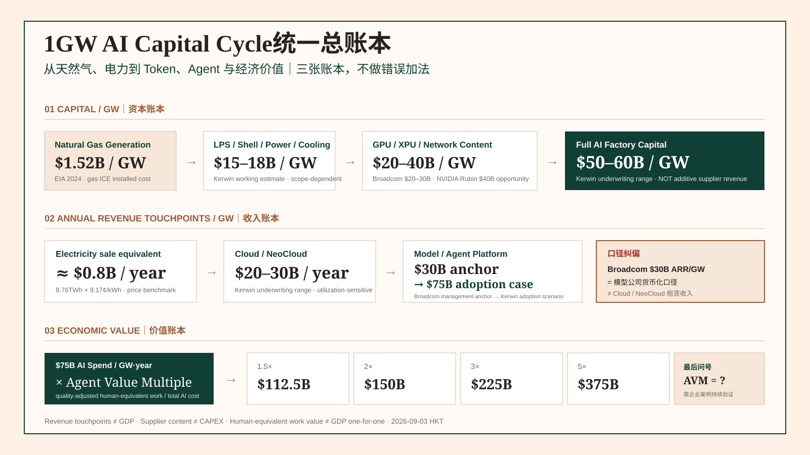

1GW AI Capital Cycle统一总账本从天然气、电力到Token、Agent与经济价值
经过 Dell、NVIDIA、Broadcom、NeoCloud、模型公司与 Agent 的连续交叉验证，1GW 已经不再只是一个电力单位。它是一条从物理能源、重资本、Token生产、模型货币化到数字劳动价值的生产函数；而真正尚未完成现实验证的最后变量，是质量调整后的 Agent Value Multiple。
最重要的不是“1GW等于多少钱”，而是每个数字属于哪一张账本
模型公司仍然是整条链最好的切分点：左边是把能源加工成Token的资本密集型制造世界；右边是把Token加工成Task、数字劳动与最终经济价值的生产率世界。但现在必须再加一层纪律——先区分 Capital / Revenue / Economic Value，再讨论价值跃迁。
一张图看懂：1GW的资本、收入与价值三张账本
这张图刻意不把所有数字画成连续加法。上层是一次性或建设期资本；中层是不同主体每年的收入触点；下层才是AI支出经过Agent后可能对应的人类等价工作价值。

第一步先统一分母：1GW究竟是哪一个1GW？
上游的1GW通常是发电机组的铭牌容量；数据中心项目里又会出现Power-ready MW、Facility Load、Energized IT MW。它们物理上相关，却不是同一个投资分母。为了避免把PUE、备用容量和尚未通电的土地混进同一条链，本文采取两段式口径：发电端按1GW generation benchmark；AI Factory及其下游按1GW energized IT load。
资本账本：普通1GW电力，如何被加工成一座Token工厂
EIA 2024年新建天然气Internal Combustion Engine（内燃机）发电设施的容量加权安装成本为 $1,522/kW，即1GW约 $1.52B。但发电资产只是AI生产函数的入口。要把电变成稳定、可调度、高利用率的AI计算能力，资本强度会跃迁一个数量级。
| 资本/供应商口径 | $/GW | 性质 | 应该怎样读 |
|---|---|---|---|
| 天然气 Internal Combustion Engine | $1.52B | EIA事实 | EIA 2024新建设施$1,522/kW的机械换算；不是AI项目专用电源的完整TCO。 |
| LPS + Shell + Power + Cooling | $15–18B | Kerwin估算 | 土地、电力接入、壳体、配电与冷却等基础设施工作区间，项目/地区/冗余标准不同会显著变化。 |
| Broadcom Custom XPU + Networking content | $20–30B | 管理层口径 | Broadcom认为每GW其silicon content大体维持这一范围；这是供应商收入机会，不是整座Factory CAPEX。 |
| NVIDIA Hopper → Blackwell → Vera Rubin | $18B → $25B → $40B | 管理层口径 | NVIDIA称其每GW revenue opportunity随平台扩展提升，Rubin覆盖CPU/GPU/NVLink/网络/Groq LPU。 |
| Full AI Factory Capital | $50–60B | Kerwin估算 | 架构、代际、PUE、土地和融资范围相关；严禁把Dell整机收入、NVIDIA与Broadcom供应商收入全部重复相加。 |
这里最关键的会计纪律是：Supplier Revenue Opportunity不是Bill of Materials的无重叠清单。 Dell服务器售价已经嵌入GPU、网络、内存等大量上游部件；NVIDIA与Broadcom的$/GW又对应不同架构。若逐家公司完整相加，会系统性高估AI Factory资本开支。
收入账本：把“106B/GW·年”从硬结论改成情景区间
1GW连续运行一年对应8.76TWh。用EIA 2026年6月美国工业平均电价 9.17¢/kWh 做“终端售电等价值”基准，约为 $0.80B/GW·年。这不是发电商利润，也不是AI数据中心的实际电费合同，只是展示价值密度从电力到Compute、再到Model发生了怎样的跃迁。
| 年度收入触点 | 当前口径 | 证据层级 | 解释 |
|---|---|---|---|
| Electricity sale equivalent | ≈$0.8B/GW·年 | 公开价格 × 物理产量 | 8.76TWh × 9.17¢/kWh；仅用于价值密度比较。 |
| Cloud / NeoCloud compute service | $20–30B/GW·年 | Kerwin underwriting range | 基于既有NeoCloud租约/每MW收入研究形成的工作区间；利用率、GPU代际和服务组合高度敏感。 |
| Model company monetization | ≈$30B ARR/GW | Broadcom管理层锚 | 对前沿模型公司的业务模型判断，适合作为当前产业锚，不应解读为已实现行业平均。 |
| Model / Agent adoption case | ≈$75B/GW·年 | Kerwin研究假设 | 代表Agent渗透、Tasks/User与Tokens/Task提升后的中长期工作情景，不是公司披露数字。 |
于是“Gross Revenue Cascade”应该写成两档，而不是一个106B硬数字
近端管理层锚情景： Electricity $0.8B + Compute Service $20–30B + Model $30B ≈ $50.8–60.8B/GW·年 的产业链Gross Revenue Touchpoints。
Kerwin Agent-adoption情景： Electricity $0.8B + Compute Service $20–30B + Model $75B ≈ $95.8–105.8B/GW·年。因此过去的“约$106B”更准确地说，是采用率提升情景的上沿，而不是当下行业平均。
NVIDIA还给出了更高的Token Factory Revenue Opportunity框算。其2026年GTC公开讨论中，一座1GW AI Factory本身的资本规模已从过去$20–30B上升到$50–60B，未来可能继续提升；另一些NVIDIA单位经济学演示把Revenue/GW推到更高区间。这里不把这些上沿直接并入基准账本，而只作为一个重要敏感性：如果性能/瓦特与高价值Token服务组合显著提升，Model/Operator Revenue/GW的天花板可能远高于今天。
模型公司自建Compute，不会把$75B Revenue自动变成$105B
外购算力时，模型公司的损益表可以简化为：
当模型公司锁定甚至拥有自己的Compute，终端客户并不会因为资产所有权改变就多付一遍云服务费。变化的是成本栈：
如果利用率足够高，原本属于Cloud/NeoCloud的稀缺加价、运营利润与部分融资溢价，就可能迁移为模型公司的Gross Profit与FCF；但模型公司也把GPU折旧、技术淘汰、残值、闲置电力和债务久期风险一起搬进资产负债表。
Agent改变的是每个用户消耗Token的生产函数，也改变下一GW何时被触发
Chat模式通常是 Human Prompt → Model Response。Agent模式则是 Human Goal → Planning → Search → Tool Calling → Model Calls → Verification → Retry → Completion。一个人只下达一次任务，后台可能产生几十次甚至更多模型调用，因此Agent同时推高 Tasks/User 与 Tokens/Task。
必须区分两个阶段
产能未满：Compute更像带有固定成本属性的产能。Agent增长首先表现为利用率、Revenue/GW和利润率杠杆。
产能已满：新增Agent需求不再只改善利润率，而会触发下一GW的土地、电力、GPU与融资需求。
Dell最新财报提供了一个物理侧交叉验证：FY2027 Q2 AI订单$60.9B、AI server revenue $16.4B、backlog $95B，AI客户超过6,500家，部分部署需要50多个独立设计。Agent需求并不是“云里发生的软件事件”；它最终会反向拉动服务器、Storage、Network、Power和Cooling的复杂工程交付。
最后一个最大的问号：企业花$1买AI，究竟获得多少美元的工作价值？
原来的定义“Human-equivalent Work Value / AI Agent Cost”方向是对的，但企业级账本需要更严格。分母不能只算Token，分子也不能只算“节省了几小时”。
Total AI Agent Cost至少应包括：模型Token、工具/API、编排与基础设施、重试失败成本、人工review，以及需要时分摊的平台/Compute固定成本。Quality-adjusted Work Value则需要把任务完成质量、速度、人工时间节省、增量收入或风险降低纳入。
| AVM情景 | $75B AI Spend对应Gross Work Value | 超过AI支出的Gross Surplus | 含义 |
|---|---|---|---|
| 1.5× | $112.5B | $37.5B | AI有生产率价值，但资本回报余量有限。 |
| 2× | $150B | $75B | 每$1 AI支出对应$2工作价值，开始形成较强企业ROI。 |
| 3× | $225B | $150B | 足以支持更快Agent渗透与下一轮Compute扩张。 |
| 5× | $375B | $300B | 数字劳动进入高杠杆生产率区域，但需大量企业案例验证。 |
OpenClaw审计案例：它证明“可测量”，但还没有证明“全社会10×”
已有真实样本里，一次OpenClaw服务器审计的模型调用直接成本约¥19–20，而若由初级工程师完成，对应人工成本约¥200+，局部成本替代比接近10×。这个案例很重要，因为它第一次把抽象Token变成可用人民币对照的数字劳动力账单。
从Revenue到GDP，中间还隔着Value Added
Electricity、Cloud、Model收入沿链叠加，回答的是“1GW在不同产业主体上激活了多少收入池”。GDP问的是增加值。Cloud的Compute已经作为Model的中间投入进入后者成本，所以不能把Cloud Revenue与Model Revenue完整重复计入国家净产出。
三个等号必须禁止
Gross Revenue Touchpoints ≠ GDP
AI Spend ≠ GDP contribution
Human-equivalent Work Value ≠ GDP one-for-one
真正的GDP桥需要逐层扣除中间投入，并判断AI是否创造了实际新增产出、质量改善、成本下降后释放的资源，以及这些变化是否进入市场交易与统计口径。
因此，这张1GW总账本的经济学闭环并不是“花$50–60B，产生$100B收入，所以GDP增加$100B”。更准确的路径是：资本形成 → Compute产能 → 模型收入 → Agent工作结果 → 企业增加值 → 宏观生产率。最后两步仍然是2026年最值得验证的变量。
统一总账本最后必须落回ROIC–WACC Spread
从现在开始，1GW账本不仅看$/MW、Token/MW、Revenue/MW，还要同步看每一层的 ROIC–WACC Spread。这是把物理算力层与Model、Agent软件层放在同一张资本回报地图上的共同语言。
| 层级 | 主要收入/回报变量 | 主要资本/成本变量 | ROIC–WACC关键观察 |
|---|---|---|---|
| Generation | Power price / capacity contract | Fuel、plant capex、maintenance | Spark spread、合同期限与电源利用率能否覆盖资本成本。 |
| LPS / Data Center | $/MW lease、time-to-power premium | Land、grid、shell、cooling、debt | 稀缺性与交付速度是否持续创造高于WACC的项目回报。 |
| Compute / NeoCloud | Revenue/MW、GPU-hour price | GPU capex、depreciation、power、debt | Utilization与租金能否跑赢折旧、残值下修与融资成本。 |
| Model | ARR/GW、Revenue/Token、Subscription/API | Compute、training/R&D、distribution | Agent增长能否让Revenue/GW上升快于Token价格下降与研发扩张。 |
| Agent / App | Successful Task、Outcome、AI spend | Inference、tools、orchestration、human review | AVM与客户留存能否证明最终生产率，并把价值的一部分留在软件层。 |
只要最下游企业愿意持续为Agent结果付费，而且其得到的经济价值显著高于AI支出，Model就有能力锁定更多GW；Model的现金流和长期承诺又支持Cloud/LPS融资；LPS需求再向上拉动电力、设备和供应链。反过来，如果Agent价值不能兑现，整个链条最先暴露的往往是利用率、租约价格、融资条件和新增GW排期。
什么情况会推翻这张账本的乐观闭环？
下一阶段，我们只盯五个数字
① Energized IT GW：真正通电且进入生产的IT负荷；
② Revenue/GW：Cloud与Model分别能货币化多少；
③ Utilization：昂贵固定资产是否被填满；
④ Agent Value Multiple：企业工作价值/AI总成本；
⑤ ROIC–WACC Spread：每一层是否仍在创造经济利润。
前四项决定“AI Factory生产力”，第五项决定资本会不会继续涌入。到这里，1GW终于从一个物理单位变成了可以连续追踪的投资研究系统。
主要来源与证据边界
沿这三条路径继续读
Broadcom FY2026 Q3：XPU、LPS与1GW资本账本 — 看清Custom XPU的$/GW content与LPS融资如何进入资本循环。
Frontier Model Economics 1.0：从模型财报到数字劳动力市场 — 从Model P&L继续向Agent Hour、Successful Task与Economic Value延伸。
真实案例：一个任务，AI和人各花多少钱？ — 用OpenClaw审计的真实Token账单观察数字劳动成本。
EnyaClawd
这张1GW统一总账本是Kerwin长期AI Capital Cycle研究的中轴：把分散在电力、LPS、算力、模型和Agent里的$/GW口径统一到同一套资本回报语言中，并持续用公司财报、合同与真实Agent任务校准。